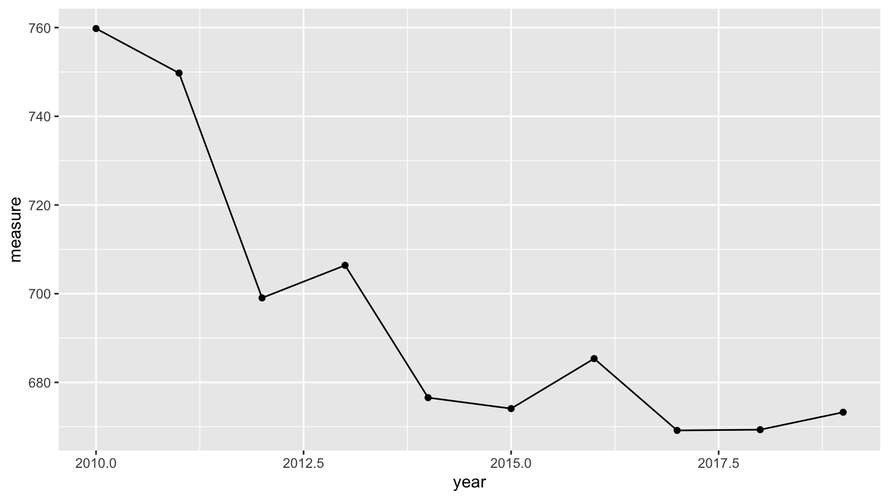
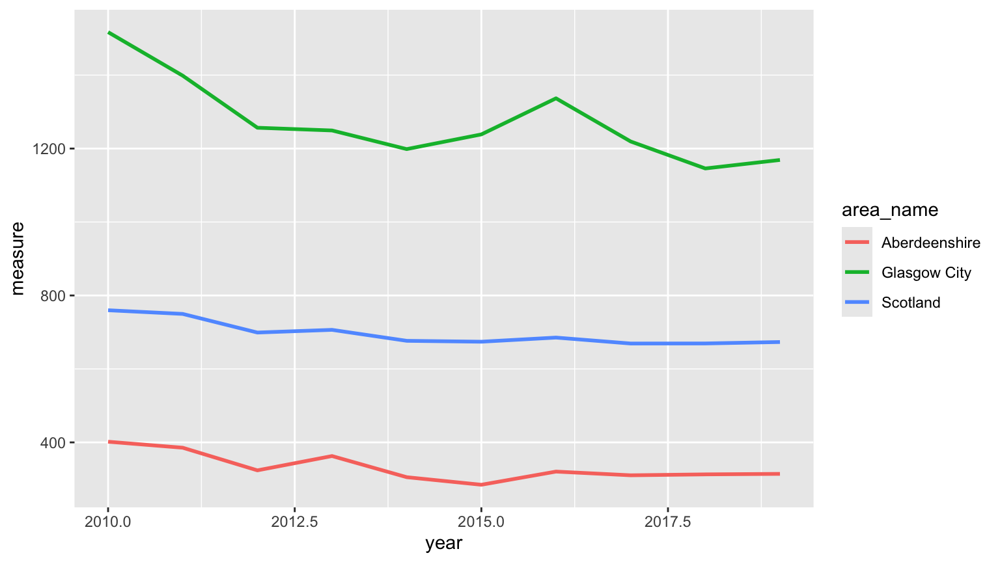
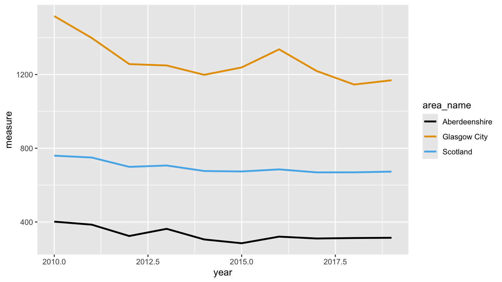
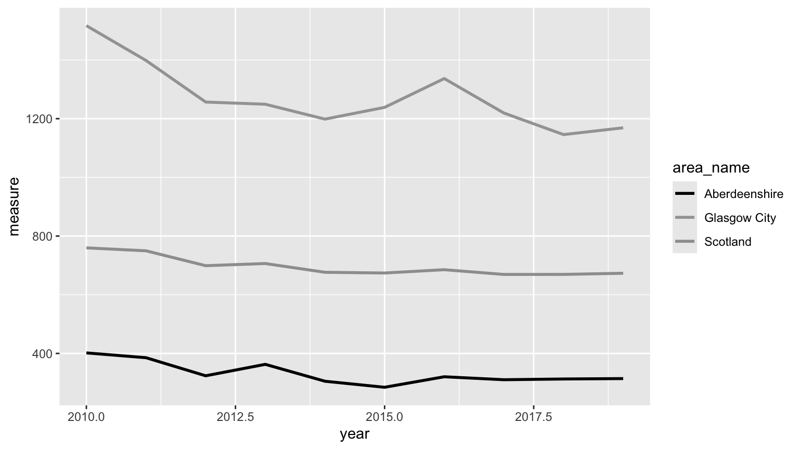
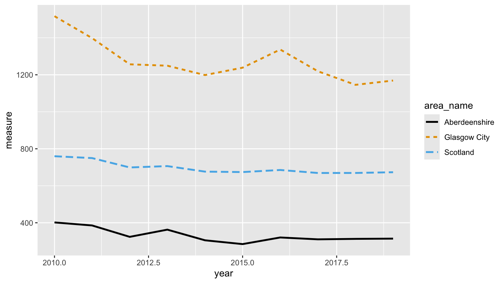
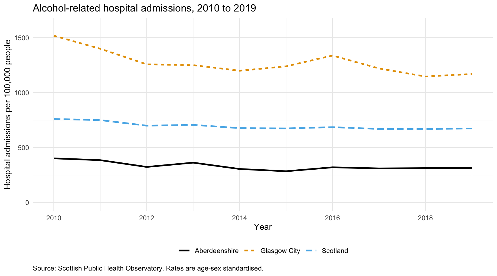

Exercises
Exercise 6: Graphics for communication
Read Chapter 5 to help you complete the questions in this exercise.
Before the session. This exercise uses the
ggplot2 package, which doesn’t come with R, so please
install it before you arrive. Run
install.packages("ggplot2") in the console. You only need
to do this once, but you will need to use library(ggplot2)
at the beginning of any script that uses it.
Everything you plotted in Exercise 5 was for graphical data
exploration (GDE). Exploratory plots are quick, sometimes a bit ugly,
and their only job is to show you what your data looks like. It doesn’t
matter that the axis label says cardiac$tchol because
you’re the only person who’ll ever see it. This exercise is about the
other kind of plot, the one that goes on a poster or in a report, where
the reader isn’t you, has about fifteen seconds, and won’t ask you what
the axis means.
We’ll also change graphics package for this exercise. Base R, which
you used in Exercise 5, is great for GDE. For a figure somebody else has
to read, ggplot2 is (arguably) the better tool. It builds a
plot up in layers, it works out the legend for you, and it lets you say
what you want rather than how to draw it, which leaves you free to think
about the decisions this exercise is really about. Having said that,
this doesn’t mean the ggplot2 package is inherently better
than base R, it’s just a different tool for the job.
We will also take this as an opportunity to switch datasets (just in case you are getting bored with the cardiacdata dataset!). In this exercise we’ll use data from the Scottish Public Health Observatory.
1. As in previous exercises, either create a new R script or continue
with your previous R script in your RStudio Project. Again, make sure
you include any metadata you feel is appropriate (title, description of
task, date of creation etc) and don’t forget to comment out your
metadata with a # at the beginning of the line.
2. Download the data file ‘scotpho_alcohol_admissions.txt’
from the
Data link and save it to your data directory.
This one is already a tab delimited text file, so there is no need to
convert it. Import it with read.table(), remembering to
write out your header, sep and
stringsAsFactors arguments, and assign it to a variable
called scotpho. Then make ggplot2 available
for the rest of the session with library(ggplot2).
library(ggplot2)
scotpho <- read.table('data/scotpho_alcohol_admissions.txt', header = TRUE, sep = "\t", stringsAsFactors = TRUE)
3. These data are an extract from the ScotPHO online profiles tool.
The indicator is alcohol-related hospital admissions, and the
measure column is an age-sex standardised rate per 100,000
population: in other words, how many people per 100,000 were admitted to
hospital for a reason related to alcohol, adjusted so that areas with
different age and sex profiles can be compared fairly. The extract
covers each of the 32 Scottish council areas plus Scotland as a whole
(area_name, area_code,
area_type), for each year from 2010 to 2019
(year). Because the rate is an estimate rather than a
count, it comes with a confidence interval
(lower_confidence_interval,
upper_confidence_interval), which gives you a sense of how
precise the estimate is.
4. Before plotting anything, get your bearings, exactly as you did in
Exercise 3. Use str() and summary() on
scotpho. How many rows are there? Use table()
on area_type to see how the rows split between council
areas and Scotland. Then check something that might matter before you
draw a line through points: does every area have a value for every year?
(hint: table() on area_name will tell you how
many rows each area has).
str(scotpho)
summary(scotpho)
nrow(scotpho) # 330
table(scotpho$area_type)
# Council area Scotland
# 320 10
# 33 areas, 10 years each. Every area is complete:
table(scotpho$area_name)
unique(table(scotpho$area_name)) # 10 - so every area has all 10 years
range(scotpho$year) # 2010 2019
# Why it's worth checking: if an area were missing a year, the line would be
# drawn straight through the gap, joining the points either side of it.
# Nothing would warn you, and the plot would imply data you don't have.
5. Right, let’s plot something. Start with the simplest possible
communication plot: how have alcohol-related admissions across Scotland
as a whole changed over the ten years? Extract just the rows where
area_name is “Scotland”, using the square bracket notation
from Exercise 3, and put them in a dataframe called
scot.
Now for your first ggplot. Every ggplot is built out of the same three pieces (Section 5.2.1 of the book walks through them slowly):
- the data, the dataframe you’re plotting
- the aesthetics, written inside
aes(), which say which column of that dataframe goes on which part of the plot. Here it’syearalong the x axis andmeasureup the y axis - a geom, which is the thing actually drawn.
geom_line()draws a line andgeom_point()draws points, and you can have both
You join them together with +, one layer per line. Here
is the shape of it, with the parts you need to change in capitals:
ggplot(data = YOUR_DATAFRAME, aes(x = YOUR_X_COLUMN, y = YOUR_Y_COLUMN)) +
geom_line() +
geom_point()Fill it in and run it. Then look at what ggplot has given you by default, and list everything a stranger would not understand about it.
scot <- scotpho[scotpho$area_name == "Scotland", ]
ggplot(data = scot, aes(x = year, y = measure)) +
geom_line() +
geom_point()
# What is wrong with this plot for anyone other than you?
# - the axes are labelled year and measure, which are column names rather
# than English
# - there are no units anywhere, so 673 could be anything
# - there is no title, so the reader does not know what is being counted
# - the x axis is broken at 2010, 2012.5, 2015 and 2017.5, and there is no
# such year as 2012.5
# - the y axis runs from about 665 to 764 rather than from zero, which
# exaggerates the decline
# - there is nothing to say where the data came from
#
# The plot is not wrong. It is just not very useful to anybody who doesn't already
# have the dataset.
6. OK, a single line rarely tells the whole story. Scotland’s average hides a lot of variation between council areas, so let’s add two of them, “Glasgow City”, which has the highest rate in Scotland, and “Aberdeenshire”, which has one of the lowest.
This is where ggplot starts to earn its keep. In base R you would pull each area into its own dataframe and draw three separate lines, keeping the colours and the legend in step by hand. ggplot works the other way round. You give it one dataframe holding all three areas, tell it which column says which area a row belongs to, and it draws one line per area and builds the legend for you.
- First we need to get those three areas into a single dataframe. You
could do it with three conditions joined by
|, the ‘or’ operator, but there’s a tidier way. The%in%operator takes a value on its left and a vector on its right and asks whether that value appears anywhere in the vector. Hand it a whole column and it does that for every row in turn, giving you back aTRUEor aFALSEfor each one, which is exactly what the square brackets want. It’s the same job you did with==and&in Exercise 3, Q10, just against a list of possibilities rather than a single one.
So scotpho$area_name %in% areas gives you 330
TRUEs and FALSEs, one per row of
scotpho. Make a vector called areas holding
the three area names, use it to extract those rows into a dataframe
called three_areas, and check with nrow() that
you have the 30 rows you expect. The nice thing about writing it this
way is that it doesn’t get any longer if you decide you want six areas
instead of three. Don’t worry if you don’t get this the first time
round, take a peek at the solutions which will hopefully make it a bit
clearer!
- Now let’s plot it, with the same three pieces as Q5 and one
addition. Inside
aes(), alongside yourxandy, addcolour = area_name. That single argument is what tells ggplot the rows belong to three different areas, and it does the rest for you, a line each and a legend down the side. What do the three lines tell you that the Scotland line on its own didn’t?
# a) the three areas in one dataframe
areas <- c("Scotland", "Glasgow City", "Aberdeenshire")
three_areas <- scotpho[scotpho$area_name %in% areas, ]
nrow(three_areas) # 30 - three areas, ten years each
# b) one geom_line(), three lines, and a legend you didn't have to write
ggplot(data = three_areas, aes(x = year, y = measure, colour = area_name)) +
geom_line(linewidth = 1)
# Glasgow City is roughly twice the Scottish average and Aberdeenshire is
# roughly half of it. In 2019 the rates were 1169, 673 and 314 admissions per
# 100,000. The national line, on its own, describes almost nobody.
7. Now, let’s think about those colours. ggplot’s defaults are not too bad, but they’re not chosen with anybody’s eyesight in mind. Roughly 1 in 12 men has some form of colour vision deficiency, most commonly difficulty telling red from green, and red and blue aren’t a safe pairing either.
Let’s redraw the plot with a colour-blind friendly palette. Base R has one built in, and
palette.colors(3, palette = "Okabe-Ito")will give you three colours from it. Assign these tocols, then hand them over to ggplot by adding ascale_colour_manual(values = cols)layer onto the end of your plot. A scale layer is how you overrule any of the decisions ggplot has made for you (see Section 5.2.4 for more).Now let’s test it. Draw the plot again, this time swapping those colours for their greyscale equivalents,
grey(c(0, 0.64, 0.62)), and see whether you can still tell the three lines apart. If you can’t, what could you change other than the colour?So let’s fix it. Colour on its own is rarely enough, so it’s a good idea to give your reader a second cue as well. Add
linetype = area_nameinsideaes(), next to thecolour = area_nameyou already have, and each area gets its own style of line as well as its own colour. Notice that ggplot works out that the two are describing the same thing and gives you a single legend rather than two.
# a) a colour-blind friendly palette
cols <- palette.colors(3, palette = "Okabe-Ito")
cols
# "#000000" "#E69F00" "#56B4E9" black, orange, sky blue
ggplot(data = three_areas, aes(x = year, y = measure, colour = area_name)) +
geom_line(linewidth = 1) +
scale_colour_manual(values = cols)
# b) the same plot in greyscale
greys <- grey(c(0, 0.64, 0.62))
ggplot(data = three_areas, aes(x = year, y = measure, colour = area_name)) +
geom_line(linewidth = 1) +
scale_colour_manual(values = greys)
# The orange and the sky blue are different enough on screen, but in grey they
# come out at 0.64 and 0.62, which is practically the same. Anyone printing
# your poster in black and white can't tell Glasgow from Scotland.
# c) a second cue, so the plot still works with no colour at all
ggplot(data = three_areas,
aes(x = year, y = measure, colour = area_name, linetype = area_name)) +
geom_line(linewidth = 1) +
scale_colour_manual(values = cols)
# mapping both colour and linetype to the same variable gives you a single
# legend showing both, which is what you want. Try it with greys instead of
# cols and you'll find the plot still reads perfectly well.


8. Next, let’s sort out the text. Every plot needs axis labels a non-specialist can read with units on them, a title that says what the reader is looking at, and a note saying where the data came from. Write the labels for someone who has never heard the phrase ‘age-sex standardised’. Your reader is a public health colleague or a member of the public, not a data scientist. We’ll revisit this again in Q9.
In ggplot all of the words live in a single labs()
layer, which takes x, y, title
and caption arguments(see Section 5.2.6).
The caption is where the source note goes. While you’re there, adding
colour = NULL and linetype = NULL to the same
labs() will get rid of the ‘area_name’ heading above the
legend, which is another column name your reader doesn’t need to
see.
There are three more things to sort out, and each one is another layer.
The x axis is still labelled with half years, which is a bit odd. Add
scale_x_continuous(breaks = seq(2010, 2019, by = 2))to put the breaks on whole years instead.Now have a think about the y axis. Should it start at zero? There’s no single right answer here, but you should be able to justify whichever you go for. If you decide it should,
scale_y_continuous(limits = c(0, 1600))will do it (see Section 5.3.2).Finally, the overall look of the plot. ggplot’s grey panel is fine on screen but can come out a bit muddy in print. A theme controls everything about the plot that isn’t your data, and there are several ready-made ones to choose from (see Section 5.2.5). Add
theme_minimal()and see what you think. If you’d rather the legend sat underneath the plot than beside it,theme(legend.position = "bottom")will move it. Just add it aftertheme_minimal(), otherwise it gets overwritten.
ggplot(data = three_areas,
aes(x = year, y = measure, colour = area_name, linetype = area_name)) +
geom_line(linewidth = 1) +
scale_colour_manual(values = cols) +
scale_x_continuous(breaks = seq(2010, 2019, by = 2)) +
scale_y_continuous(limits = c(0, 1600)) +
labs(x = "Year",
y = "Hospital admissions per 100,000 people",
title = "Alcohol-related hospital admissions, 2010 to 2019",
caption = "Source: Scottish Public Health Observatory. Rates are age-sex standardised.",
colour = NULL, linetype = NULL) +
theme_minimal() +
theme(legend.position = "bottom", plot.caption = element_text(hjust = 0))
# plot.caption = element_text(hjust = 0) pushes the source note over to the
# left. ggplot right aligns it by default, which doesn't look quite right.
# Should the y axis start at zero?
# Starting at zero, as here, shows the true relative size of the difference
# between the areas, and Glasgow really is about four times Aberdeenshire.
# Starting at the minimum instead would fill the panel with the year to year
# wiggles and make a fairly modest national decline look dramatic. For a rate
# like this, where zero is meaningful and the comparison between areas is the
# point, starting at zero is the honest choice. For something like average age,
# where zero is nowhere near the data, it wouldn't make much sense. Whichever
# you go for, just be able to say why.
9. Last of all, let’s get the plot out of R at a size and resolution that’s fit for a poster. The screen defaults aren’t much use here, and a plot that looks fine in the RStudio plot pane might be a blurry mess blown up to A1.
This is a bit easier if you give the plot a name first. Assign the
whole thing from Q8 to an object called admissions_plot,
exactly as you would assign anything else in R. Don’t worry when nothing
appears, that’s normal. You’ve stored the plot rather than drawn it, so
type admissions_plot in the console to see it.
Now save it with ggsave(), which is ggplot’s version of
the three step business you met in Exercise 5, Q12. There’s no device to
close this time, because ggsave() opens and closes it for
you, and it works out which format you want from the file extension you
give it (see the end of Section 5.2.6).
Save your plot twice into the output directory you
created in Exercise 1, once as ex6_admissions.pdf and once
as ex6_admissions.png. Use width = 10 and
height = 5.625, which gives you a 16:9 shape and is what
most poster and slide templates expect, and for the png also set
dpi = 300, which is the usual minimum for print. Open both
files and have a look at them at full size before you believe them.
Hang on to that png. You’ll put it into a report in Exercise 7 and then into a repository in Exercise 9, so it needs to still be there in a fortnight.
# give the plot a name. Nothing is drawn until you ask for it by name
admissions_plot <- ggplot(data = three_areas,
aes(x = year, y = measure, colour = area_name, linetype = area_name)) +
geom_line(linewidth = 1) +
scale_colour_manual(values = cols) +
scale_x_continuous(breaks = seq(2010, 2019, by = 2)) +
scale_y_continuous(limits = c(0, 1600)) +
labs(x = "Year",
y = "Hospital admissions per 100,000 people",
title = "Alcohol-related hospital admissions, 2010 to 2019",
caption = "Source: Scottish Public Health Observatory. Rates are age-sex standardised.",
colour = NULL, linetype = NULL) +
theme_minimal() +
theme(legend.position = "bottom", plot.caption = element_text(hjust = 0))
admissions_plot # draw it in the plot pane
# pdf: a vector format, so it stays sharp at any size. Sizes are in inches.
ggsave('output/ex6_admissions.pdf', plot = admissions_plot,
width = 10, height = 5.625, units = "in")
# png: pixels, so the resolution matters. 10 x 5.625 inches at 300 dpi gives
# you a 3000 x 1687 pixel image that will print cleanly.
ggsave('output/ex6_admissions.png', plot = admissions_plot,
width = 10, height = 5.625, units = "in", dpi = 300)
# Use the pdf for anything going to a printer and the png for anything going
# into a Word document, PowerPoint or a web page. If your poster template asks
# for a particular figure size, set width and height to that size here rather
# than resizing the image afterwards, which is what makes text look squashed
# or fuzzy.
# If you leave out plot = admissions_plot, ggsave() saves the last plot you
# drew. That's usually the one you wanted, but not always, so naming it is
# safer.
End of Exercise 6